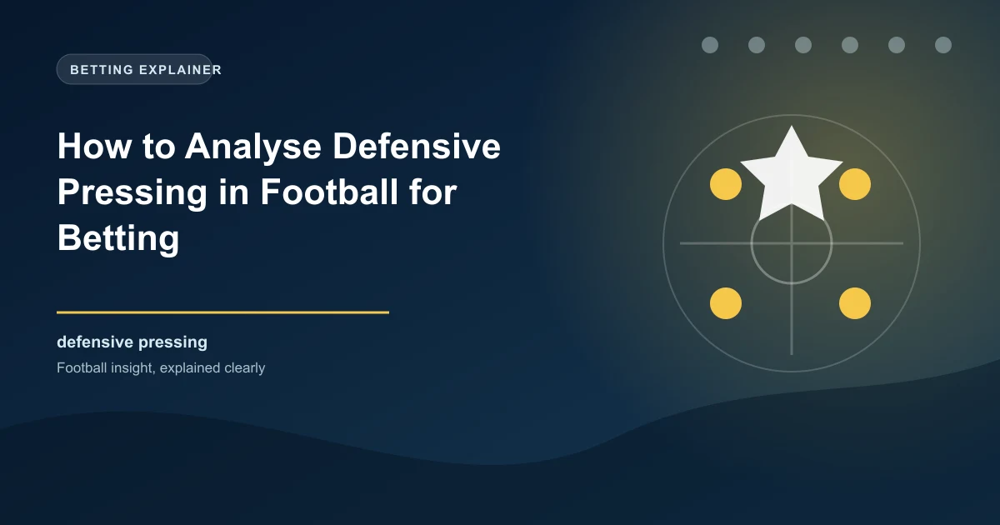

Modern football is increasingly defined by what happens without the ball. The pressing revolution, popularised by coaches like Marcelo Bielsa, Jurgen Klopp, and to some extent Pep Guardiola, has transformed how teams defend. Rather than waiting for the opponent to bring the ball into their territory, pressing teams actively hunt the ball in the opponent's half, aiming to win possession high up the pitch and create scoring opportunities from turnovers. For bettors, understanding pressing intensity and its effects on match dynamics provides a significant analytical advantage.
Pressing is not just about running around aggressively. It is a coordinated tactical system that requires specific physical conditioning, tactical intelligence, and collective understanding. When executed well, it is one of the most effective defensive strategies in football. When executed poorly, it leaves enormous spaces for opponents to exploit. The difference between an effective press and a disorganised one is the difference between winning titles and conceding five goals.
The most widely used metric for measuring pressing intensity is PPDA, which stands for Passes Per Defensive Action. PPDA counts the number of passes the opponent completes before the pressing team attempts a defensive action, which includes tackles, interceptions, fouls, and pressures. A lower PPDA number indicates more intense pressing because the team is attempting defensive actions more frequently.
While PPDA is the most common pressing metric, other measures provide additional context. Total pressures counts the number of times a team applies pressure to the ball carrier. Pressing success rate measures what percentage of pressing attempts result in the team winning possession. Defensive line height indicates how high up the pitch the team's defensive block is positioned, which correlates with pressing intensity.
Together, these metrics paint a comprehensive picture of a team's defensive approach. A team with low PPDA, high total pressures, and a high defensive line is committing fully to the press. A team with high PPDA, low pressures, and a deep defensive line is choosing to defend passively.
Pressing intensity fundamentally alters the character of a football match. When one team presses aggressively, it forces the opponent into specific patterns of play that would not otherwise occur. Understanding these dynamics is critical for predicting how a match will unfold and which betting markets are most likely to produce value.
The most immediate effect of high pressing is winning possession closer to the opponent's goal. When a team presses aggressively in the opponent's defensive third, turnovers in this area create immediate scoring opportunities because the opponent is out of position and the pressing team's forwards are already in dangerous positions.
Statistics consistently show that teams with lower PPDA (more intense pressing) create more chances from turnovers and have a higher proportion of their attacks originating in the opponent's half. This is not coincidental. It is a direct consequence of the tactical approach. By winning the ball high, the pressing team eliminates the need to build from the back and progress the ball through the midfield, creating shorter, more efficient attacking sequences.
Teams that press intensely typically generate higher xG per match than teams that defend passively. The aggressive approach creates more turnovers in dangerous areas, which leads to more shooting opportunities. Additionally, the pressing team often maintains possession for longer periods after winning the ball back, because the opponent is disorganised from the turnover and cannot immediately re-establish their defensive shape.
However, this increased chance creation comes with a cost that bettors must understand.
The fundamental risk of high pressing is that it requires the defensive line to push forward to support the press. When the press is broken, typically by a well-weighted pass over the top or through the lines, the pressing team is exposed with significant space between their defensive line and their goalkeeper. Teams that can resist the initial press and find the right pass to exploit this space create high-quality scoring opportunities.
This dynamic has direct implications for total goals markets. Matches involving high-pressing teams tend to produce more goals overall because both the pressing team and their opponents generate high-quality chances. The pressing team creates through turnovers, while the opponents create by exploiting the space left behind the press.
Research across Europe's top five leagues consistently shows a positive correlation between pressing intensity and total goals in a match. Matches where both teams press aggressively produce the highest average goals per match, while matches where both teams sit deep produce the lowest.
This correlation is not perfect, and there are many exceptions, but it provides a useful baseline for evaluating total goals markets. The pressing matchup between two teams is one of the most reliable predictors of whether a match will produce goals.
The correlation is strongest in the first half, when both teams have the physical energy to maintain their pressing intensity. As matches progress, pressing tends to decrease due to fatigue, which is why the second half often sees a shift in match dynamics. Understanding this fatigue effect is crucial for in-play betting.
Pressing intensity is heavily influenced by coaching philosophy. Certain managers have built their careers on pressing, and their teams consistently rank among the most intense in their respective leagues.
Bielsa is widely regarded as the father of modern pressing. His teams, whether at Athletic Bilbao, Marseille, Leeds United, or Uruguay, are defined by relentless intensity. Bielsa's teams typically have PPDA values well below 10, often reaching into the 7 to 8 range during their most intense periods. The trade-off is significant: Bielsa's teams create enormous numbers of chances but also concede frequently, producing some of the most entertaining and high-scoring matches in their leagues.
Klopp's "gegenpressing" philosophy made Liverpool one of the most intense pressing teams in Premier League history during their peak years. Their PPDA values regularly sat between 8 and 10, and they were particularly effective at winning the ball in the opponent's final third. Klopp's teams demonstrated that pressing can be combined with elite quality to produce both high goal-scoring records and strong defensive records.
Guardiola's pressing is different in character from Bielsa's or Klopp's. Rather than chasing the ball aggressively, Guardiola's press is more controlled and positional. City's PPDA is not always among the lowest, but their pressing success rate is typically very high because they press in a coordinated, zonal manner that forces opponents into specific passing lanes where the press is most effective. This controlled approach means City concede fewer high-quality chances from broken presses than more aggressive pressing teams.
When analysing a pressing team, do not rely on PPDA alone. A team may have a low PPDA but a poor pressing success rate, meaning they press intensely but opponents regularly play through the press. The combination of low PPDA and high pressing success rate indicates genuine pressing quality.
One of the most important nuances in pressing analysis is that pressing effectiveness is not constant. It varies significantly depending on the quality and style of the opponent. A team that presses brilliantly against weaker opposition may struggle to maintain the same effectiveness against a technically superior opponent who can resist the press.
Against teams that are comfortable on the ball and have technically proficient players, pressing becomes more difficult because these opponents can play through pressure, find the right passes to escape the press, and exploit the spaces that pressing creates. This is why many high-pressing teams see their PPDA increase (they press less effectively) against top-six opponents compared to lower-table teams.
Conversely, pressing is most effective against teams that are uncomfortable on the ball, play direct passes that are easier to intercept, and lack the technical quality to play through tight spaces. When a high-pressing team faces a technically weaker opponent, the press produces more turnovers, more chances, and typically more goals.
Understanding pressing dynamics gives bettors several specific edges across different betting markets.
When a high-pressing team faces a team that is uncomfortable under pressure, the pressing team has a significant tactical advantage. This advantage may not always be reflected in the odds, particularly if the pressing team is lower in the league table or considered a weaker team overall. Identifying these pressing mismatches can provide value in the 1X2 market.
Conversely, when a high-pressing team faces an opponent with excellent press resistance, the tactical advantage shifts. The pressing team expends enormous energy trying to win the ball but fails to create the turnovers that their system depends on. These matches often see the pressing team tire in the second half and concede, creating potential value on the press-resistant team.
Pressing is physically demanding. Teams that press intensely over a long season accumulate fatigue that manifests in reduced pressing intensity during the final months. This fatigue effect is particularly pronounced in teams with small squads that cannot rotate effectively.
Research shows that the PPDA of high-pressing teams typically increases by 10% to 20% from August to May. This means a team with a PPDA of 9 in September might have a PPDA of 11 by April. This decline correlates with a reduction in chances created from turnovers and an increase in goals conceded from transitions. For bettors, this suggests that high-pressing teams may offer less value in the final weeks of the season compared to earlier.
Pressing intensity often increases in high-stakes matches, derbies, and cup finals. The emotional intensity of these occasions drives players to press harder, which can produce either excellent results (if the press is coordinated) or chaotic, open matches (if the press breaks down frequently). These matches frequently produce more goals than average and can offer value in Over 2.5 or BTTS markets.
Pressing analysis adds a tactical dimension to betting that goes beyond traditional statistics. By understanding which teams press effectively, how pressing intensity affects match dynamics, and when pressing is most and least likely to succeed, you can identify value in markets that purely statistical analysis might miss.
Explore our free football predictions for matches analysed with pressing data and tactical intelligence. Make every bet informed by the deeper picture.
 Win
Win